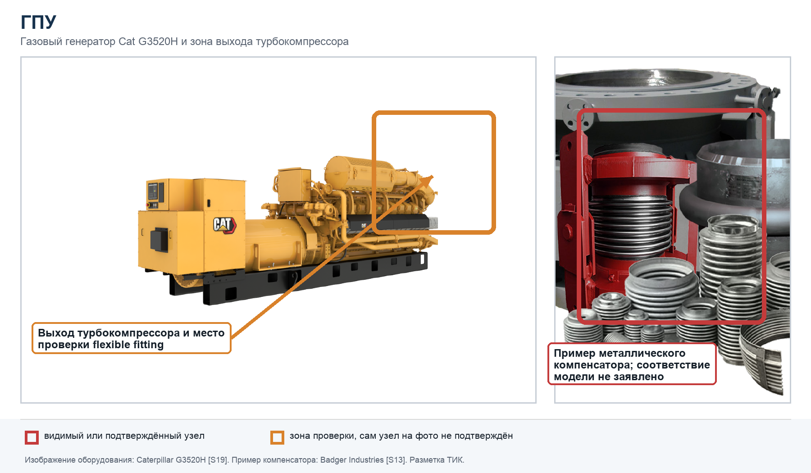

- Где искать узел
- Зачем он нужен
- Кому звонить сначала
- Что искать в открытых данных
- Первые вопросы
- Красный флаг
Внутреннее обучение ТИК · без инженерных догадок
От оборудования к правильному контакту
Один справочник, чтобы понять узел, найти компанию, выйти на нужного человека и передать инженеру проверяемые данные.
- Узнать оборудованиеТип, модель, узел, среда и режим.
- Найти точку компенсацииЧто движется и почему.
- Определить рольЭксплуатация, сервис, проектировщик, изготовитель или снабжение.
- Собрать исходные данныеНе подменять отсутствующее догадкой.
- Передать инженеруФакты, документы, недостающие данные и срок.

видимый или подтверждённый узел
зона проверки
ПЕРЕД НАЧАЛОМ · КОРОТКИЙ СЛОВАРЬ
Сокращения, которые встретятся в документах и разговорах
На сайте всё объясняется по-русски. Этот словарь нужен, чтобы узнавать обозначения на шильдиках, чертежах и в перечнях деталей.
- ДГУ
- дизель-генераторная установка
- ГПУ
- газопоршневая установка
- ГТУ
- газотурбинная установка
- ПГУ
- парогазовая установка
- КУ
- котёл-утилизатор, использующий тепло выхлопных газов
- СПГ
- сжиженный природный газ
- DN
- обозначение номинального размера трубы или присоединения
- S/N
- серийный номер оборудования
- P/N
- каталожный номер детали у изготовителя
- OEM
- изготовитель исходного оборудования
- EPC
- организация, отвечающая за проектирование, закупку и строительство объекта
- BOM
- заводской перечень деталей и узлов комплектации
- P&ID
- схема трубопроводов, арматуры и приборов
- GA
- чертёж общего вида и расположения оборудования
- HRSG
- котёл-утилизатор за газовой турбиной
01 · ОСНОВЫ
Что нужно понять до первого звонка
Менеджер определяет контекст и полноту данных. Конструкцию, материал и ресурс подтверждает инженер.
Компенсатор принимает заданное движение
При нагреве труба или газоход удлиняются; машина вибрирует; опоры и корпуса смещаются. Гибкий узел допускает рассчитанное относительное перемещение, но не заменяет опоры и расчёт системы.
Рабочая формулаОборудование → место → причина движения → среда и режим → геометрия → документы → инженер.
Не говорить: «подойдёт только потому, что совпал размер DN», «уберёт любую вибрацию», «можно растянуть при монтаже».
Три направления и один опасный случай
ОсевоеКонцы сближаются или расходятся вдоль оси.
СдвиговоеОдин конец смещается поперёк, торцы остаются параллельными.
УгловоеОси концов образуют угол; шарнир или кардан направляет движение.
Кручение не равно угловому движению. Поворот вокруг продольной оси — отдельный красный флаг.
Семейство определяют по задаче и среде, а не по цвету
МеталлическийГофрированный сильфон для трубопроводов, аппаратов и выхлопа.
РезиновыйГибкая вставка на насосной и водяной обвязке; важна совместимость эластомера.
ТканевыйМягкий пакет на рамах газохода большого сечения.
ЛинзовыйТолстостенный сварной элемент аппарата или теплообменника.
Менеджер не подбирает изделие
Его результат — квалифицированный запрос с понятным местом узла, режимом, документами и списком пропусков.
МожноУточнить тип оборудования, место, среду, режим, размеры, маркировку, срок и статус данных.
НельзяОбещать материал, слои, ресурс, расчётные перемещения, совместимость и цену без проверки.
Если данных нет: пишем «не найдено в доступных документах» и указываем, кто и когда их предоставит.
02 · СФЕРЫ ПРИМЕНЕНИЯ
Где стоит узел и кто владеет решением
Выберите сферу. Сайт покажет фото, типичную точку, поисковые сигналы, роль для первого контакта и красный флаг.
03 · КАК ИСКАТЬ
Ищем не «компенсаторы», а парк оборудования и причины замены
Потребность часто видна раньше закупки: в парке машин, капремонте, реконструкции, отказе узла или новом проекте.
- Найдите паркСписки электростанций, металлургических площадок, флота, компрессорных станций, терминалов и установок со сжиженным природным газом, лабораторий.
- Свяжите модель с типовым узломНе для подбора, а для понимания, где спрашивать: выхлоп, газоход, кожух, обвязка, сильфон ввода.
- Поймайте сигнал потребностиОстанов, дефектовка, утечка, трещина, повреждённая гофра, модернизация, строительство, закупка ЗИП.
- Проверьте роль компанииЭксплуатант знает проблему; сервис видит дефект; проектировщик знает схему и расчётные условия; изготовитель оборудования — заводскую комплектацию и перечень деталей; снабжение оформляет покупку.
- Начните с технического контактаПри замене — ремонт или сервис; при новом проекте — проектировщик, генеральный подрядчик или изготовитель оборудования; при аварии — эксплуатация и главный механик.
Поисковая доска
Оборудование
модель двигателякотёл-утилизаторпечькомпрессор
Узел
выхлопной газоходгибкая вставкасильфонтканевый компенсатор
Событие
капитальный ремонтдефектовкамодернизациязамена газохода
Проблема
трещинаутечкапрогарвибрацияповреждение гофра
Документ
опросный листтехническое заданиеперечень деталейсхема трубопроводовдефектная ведомость
04 · КОМУ ЗВОНИТЬ
Два контакта: технический и формальный
Лицо, которое понимает дефект и чертёж, и лицо, которое оформляет покупку, часто не совпадают.
| Приоритет | Роль | Что знает | Когда звонить | Что получить |
|---|---|---|---|---|
| 01при замене | Главный механик, ремонт, сервис | Дефект, дату останова, снятый образец | Авария, течь, плановая замена | Фото, маркировку, размеры, акт дефектации |
| 01при проекте | Проектировщик, генеральный подрядчик, интегратор | Трассу, опоры, движения, расчётный режим | Новая установка, реконструкция | Схему трубопроводов, чертёж общего вида, изометрию, нагрузки на патрубки |
| 02 | Изготовитель машины или сборщик комплектной установки | Комплектацию и допуски | Известны модель, серийный или каталожный номер | Заводской перечень деталей, каталожный номер, чертёж, допустимые нагрузки |
| 03 | Эксплуатация, начальник участка | Режим, историю отказов, наработку | Нужна причина потребности | Режимы, циклы, фото в рабочем контексте |
| 04 | Снабжение, закупки | Процедуру, срок, бюджет, договор | Когда техническая часть уже понятна | Опросный лист, формат предложения, условия закупки |
05 · ПЕРВЫЙ ЗВОНОК
Разговор начинается с машины, а не с цены
Готовая формулировка
«Подскажите, на каком оборудовании стоит узел и где именно: до или после какой машины? Это новая установка, плановая замена или дефект? Чтобы не обещать неверное исполнение, нам нужны фото общего вида, маркировка, размеры и режим. После этого инженер скажет, хватает ли данных для оценки».
Если спрашивают цену: «Цена зависит от конструкции, материала, режима и присоединений. Сначала зафиксирую узел и исходные данные».
Чек-лист звонка
Отмечайте по ходу разговора06 · ПЕРЕДАЧА ИНЖЕНЕРУ
Соберите карточку запроса
Данные никуда не отправляются. Сайт формирует текст локально в браузере.